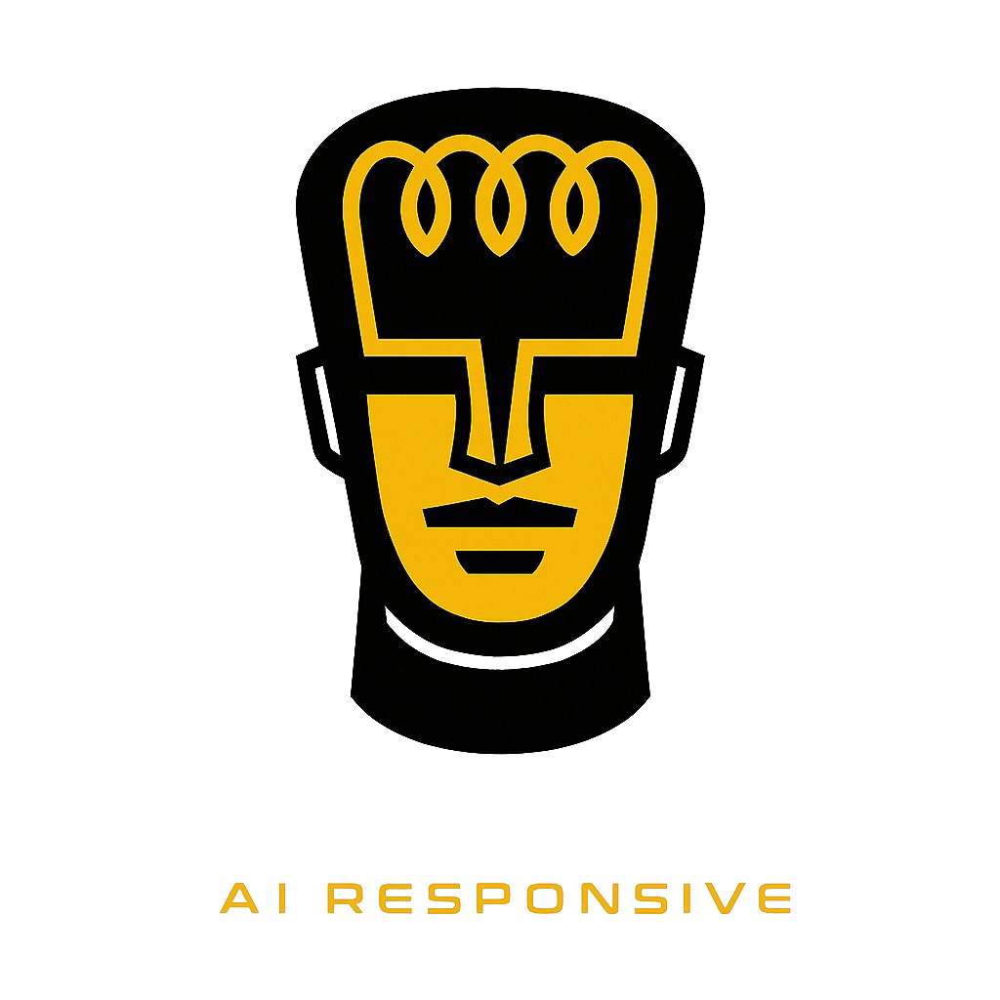

Acordes, voicings y cancionero para guitarra

Descargá todos tus datos en un solo archivo JSON, o restauralos desde un backup anterior.
Clickeá notas en el diapasón para agregar o quitar. Las notas de la escala se muestran en gris, tus notas seleccionadas en color.
Tocá cuerdas y trastes para identificar el acorde
Pega el texto copiado de sitios como LaCuerda.net (acordes arriba de la letra). Se convertira automaticamente al formato [Acorde]letra.